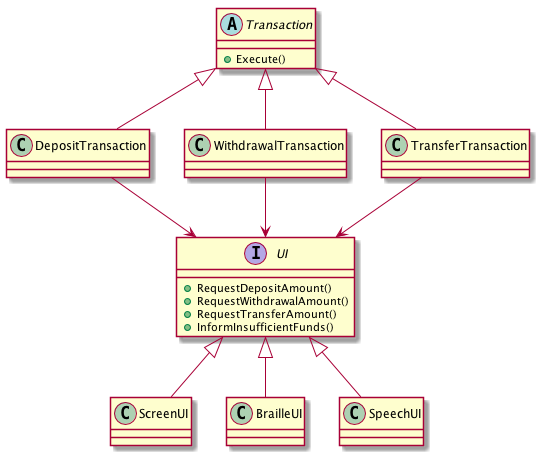
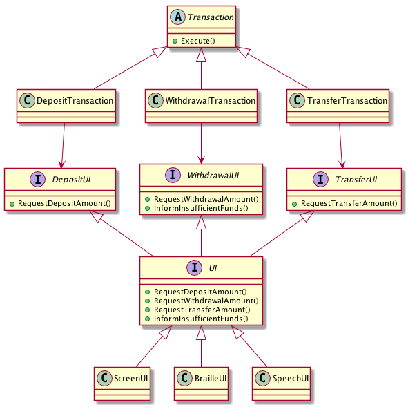

03:24-… Overview of last video (LSP)
14:28-15:41
Switch -> Light dependency?15:41-19:35
19:35-21:00
21:00-24:40 (skip) rant about interfaces.
25:50-33:42 fat classes example: the job class
33:42-36:30 the problem with fat classes
Consider the following example from an ATM application.

Each of the different transactions uses different parts of the interface. However as it stands they all depend on the interface.
Question: If the TransferTransaction needs a new method added to the interface, which parts of the system will need to be recompiled?
Conclusion: A module that knows about more than it needs to may end up being affected by changes to other modules that it does not depend on, because those modules may ask for changes to other modules that they both depend on.
Common dependencies cause transitive coupling between the modules that share the dependency.
Alternative setup, solves this problem.

45:00- 50:00 the interface segregation principle
54:00-58:25 the need to know